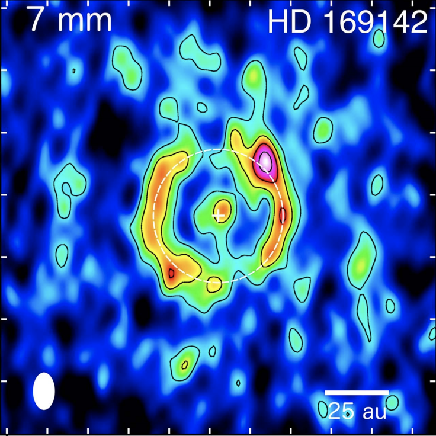

Papers
-

MARS CURIOSITY ROVER
Our website templates are created with inspiration, checked for quality and originality and meticulously sliced and coded. What’s more, they’re absolutely free! You can do a lot with them. You can modify them. You can use them to design websites for clients, so long as you agree with the Terms of Use.
Read More -

Imaging a Central Ionized Component, a Narrow Ring, and the CO Snowline in the Multigapped Disk of HD 169142
Macias et al. 2018
Abstract: We report Very Large Array observations at 7 mm, 9 mm, and 3 cm toward the pre-transitional disk of the Herbig Ae star HD 169142. These observations have allowed us to study the millimeter emission of this disk with the highest angular resolution so far (0 12 × 0 09, or 14 au × 11 au, at 7 mm). Our 7 and 9 mm images show a narrow ring of emission at a radius of ∼25 au tracing the outer edge of the inner gap. This ring presents an asymmetric morphology that could be produced by dynamical interactions between the disk and forming planets. Additionally, the azimuthally averaged radial intensity profiles of the 7 and 9 mm images confirm the presence of the previously reported gap at ∼45 au and reveal a new gap at ∼85 au. We analyzed archival DCO+(3–2) and C18O(2–1) ALMA observations, showing that the CO snowline is located very close to this third outer gap. This suggests that growth and accumulation of large dust grains close to the CO snowline could be the mechanism responsible for this proposed outer gap. Finally, a compact source of emission is detected at 7 mm, 9 mm, and 3 cm toward the center of the disk. Its flux density and spectral index indicate that it is dominated by free–free emission from ionized gas, which could be associated with the photoionization of the inner disk, an independent object, or an ionized jet.
Read Paper